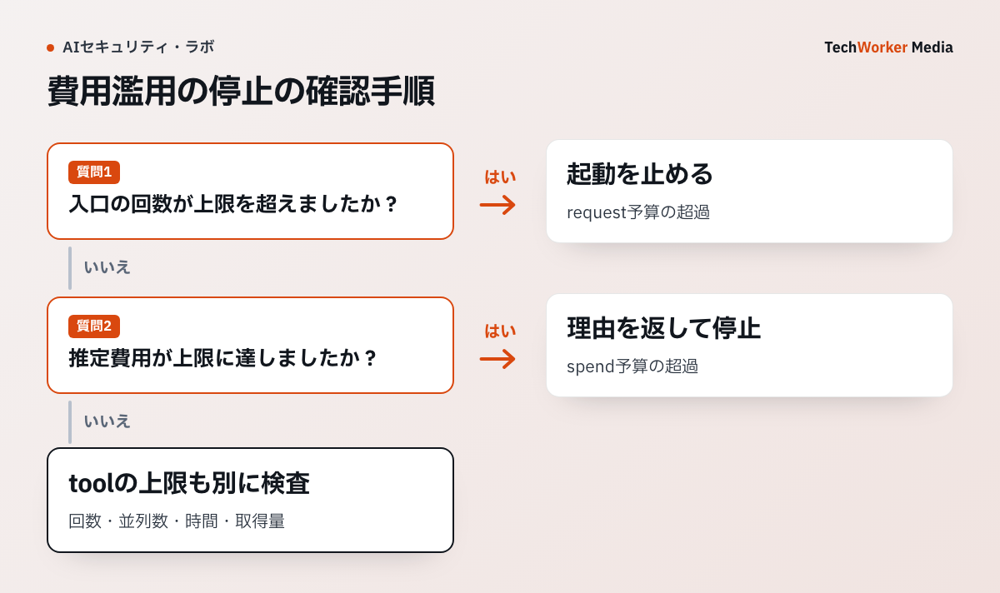

AIを組み込んだサービスでは、短時間の大量アクセスやツールの連続実行で、想定以上の費用が発生することがあります。費用上限の設定だけに頼らず、要求を受ける入口と後続処理にも停止条件を置きます。まず、Cloudflareが説明する費用上限の制約を見ます。
一次資料：Cloudflareの費用上限の制約（2026年、Beta、確認：2026年10月6日）
Spend limits are eventually consistent.
出典：Cloudflare AI Gateway, Spend limits。費用上限は、すべての要求へ即時に反映されるわけではありません。同時実行が重なると、一時的に設定額を超える可能性があります。

公式資料は回数と費用を別の制御としている
回数上限は要求回数を抑えます。費用上限はモデル価格とトークン使用量から金額を追います。短い要求を大量に送る事故と、少数の長い要求で費用が膨らむ事故は、同じ上限では止めにくいためです。
Cloudflareは、費用上限が即時には反映されない仕組みだと説明しています。同時要求が集中すると、記録反映まで一時的に上限を超える可能性があります。
この費用は、トークン数と価格が分かるモデルから計算する概算です。Cloudflareも最善努力の推定値と位置づけているため、確定額はモデル提供事業者の請求画面と照合します。価格が不明なモデルを費用上限だけで管理しません。
要求・金額・ツールに別の予算を持たせる
APIゲートウェイでは毎分要求数と日次・月次金額を設定します。エージェント側では、1作業あたりのモデル呼出し、検索、ブラウザ操作、外部API更新の回数を持たせます。
ツール予算が切れたら、途中までの結果と未実行操作を返します。黙って品質を落としたモデルへ切り替えると、利用者は結果の条件を判断できません。
利用者・チーム・エージェント単位で原因を残す
全社総額だけでは原因を追えません。利用者ID、チーム、アプリケーション、エージェントIDを付随情報へ付けます。Cloudflareのcf.user_idを費用上限の区分に使えるのは、Accessで保護した独自ドメインへ有効な利用者トークンで届く要求です。サービストークンの要求には入らないため、機械通信はゲートウェイ側で付ける改ざん困難な別の区分キーを使います。
付随情報は改ざんされない場所で付与します。クライアントが自由に利用者IDを書けると、他人の予算へ費用を寄せられます。
上限超過時の失敗を業務処理の流れへ組み込む
429を返すだけでは、エージェントが再試行を重ねることがあります。上限超過は再試行しないエラーとして扱い、利用者へ再開時刻と未完了部分を示します。
月末の上限試験では、同時要求での一時超過、提供事業者価格が不明なモデル、外部ツールの従量課金も確認します。厳格な上限が必要な業務は、提供事業者の請求上限や前払い残高も併用します。